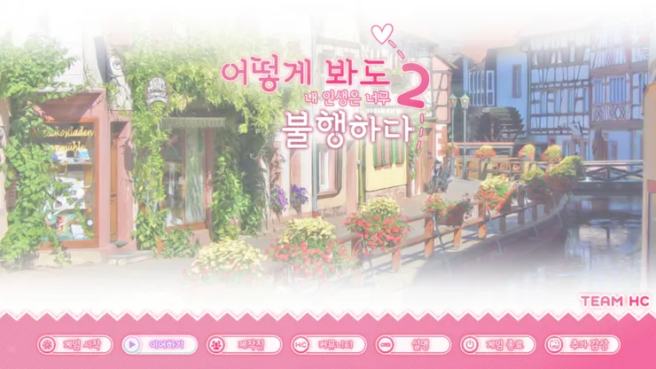
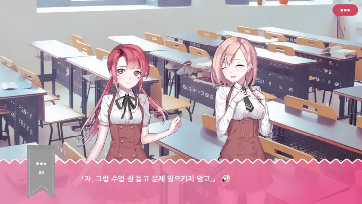
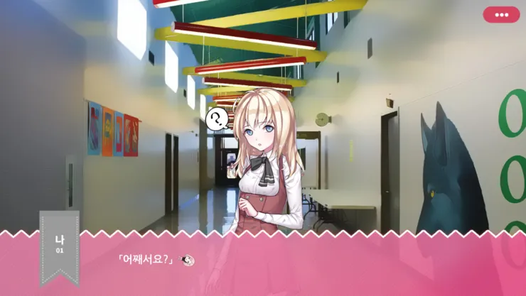
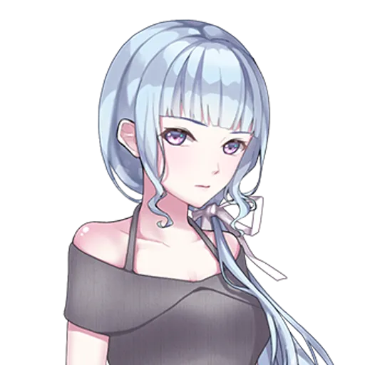
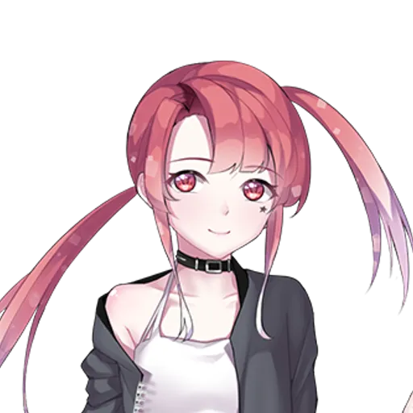

프로젝트 17 · 2019.06.22 발매
위험한 사이트 HCer를 둘러싼 의혹.
피에르와 함께 사용자를 찾아 나서는데—
어느 날, 체육 창고에 숨어 있던 전학생 피에르. 그녀가 처음 던진 질문은 낯선 이름이었다. "이 학교에 HCer 가입한 사람 있어?" 사용자를 찾아 개도하기 위한 주인공의 추적이 시작된다.
위험한 사이트를 둘러싼 의혹을 파해지는 이야기. 본래 에피소드 1/2로 나뉘어져서 발매될 예정이었지만, 에피소드 1의 내용이 산불과 관련된 내용이였기에 발매가 연기되었고, 에피소드 2만 발매 되게 되었습니다.

10대에서 20대가 주류인 숨겨진 커뮤니티. 위법적인 내용이 오간다. 마리아나 웹에서 파생된 사이트로 노드를 뛰어넘어 쉽게 차단되지 않는다.

피에르의 목적은 HCer 사용자를 찾아 그만두게 만드는 것. 약물 사용자는 종아리나 팔뚝에 멍이나 털을 민 흔적을 가진 특이한 사람이 있다면 반드시 피에르에게 먼저 알려야 한다.

다정한 여동생 석류, 상냥한 NC 선배, 츤데레 아이오. 평범한 학교 생활 속에 HCer라는 그림자가 드리운다.
이야기를 이끌어가는 인물들.
주인공과 같은 반 친구. 석류와 만나면 항상 으르렁거린다. 주인공을 사이에 두고 신경전을 벌인다.
주인공이 존경하는 선배. 상냥하고 다정하며, 힘들어 보이는 주인공을 자주 안아준다. 항상 안전을 강조한다.

주인공의 여동생. 중학생이지만 요리 솜씨가 뛰어나다. 오빠를 무릎 베개로 재워주는 등 다정한 성격.

전학생. 체육 창고에 숨어 있다가 주인공과 아이오에게 발견된다. 밝은 성격으로 첫 등장부터 반 전체를 정적에 빠뜨린다. HCer라는 위험한 사이트를 아는 유일한 인물이며, 사용자를 찾아 개도하려 한다.
평범한 일상에 스며든 균열, 당신의 선택은?
설명 내용이 여기에 들어갑니다.